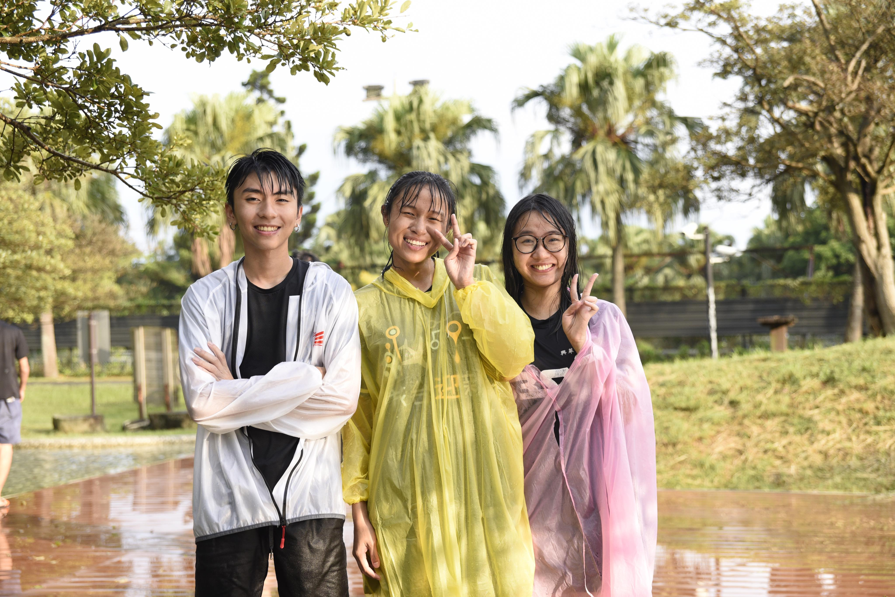

您好，再見
我的個人履歷
目錄
基本資料
生活照片
個人經歷
興趣愛好
基本資料
姓名：趙家和
性別：男
出生日期：1998/7/15
國籍：馬來西亞
目前就讀：國立臺灣大學哲學系
學號：B06104029
生活照片
我的會長與我
到紫南宮七星級厠所春運的照片

我與迎新的搭檔
到桃園浦心牧場玩水大地後的照片
我
到東湖與櫻花合照
Previous
Next
個人經歷
曾經在國小擔任組長
初中當整潔股長
高中當班長
稱在安親班擔任小老師
短期擔任保險代理人
在路邊銷售肉乾
餐廳，市場服務員
大學擔任馬來西亞同學會副會長
興趣愛好
以照片的方式呈現喜好！
打羽球
游泳
唱歌
看電影